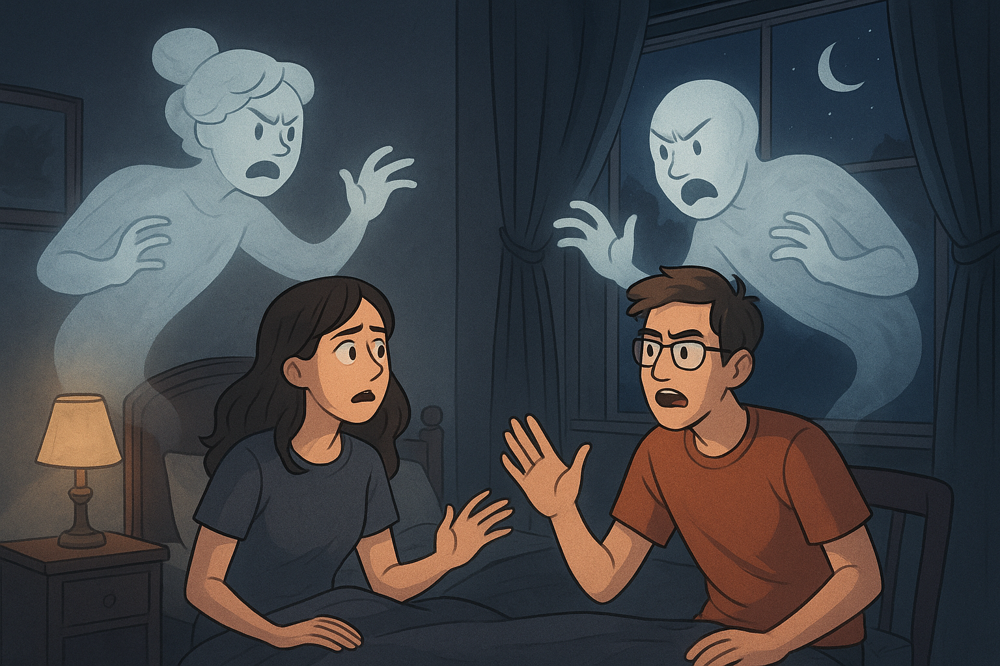

Introduction
I want to ask ChatGPT a fun prompt so I decided to ask it to create a dialogue between two ghosts who haunt the same house but dislike each other’s haunting style. I want to see how this ends and expand as it goes!
The prompt:
Write a dialogue between two ghosts haunting the same house who are annoyed by each other’s haunting style.
Response
This is ChatGPT’s response:
Setting: A creaky old Victorian house. Midnight. One ghost, Margaret, prefers subtle, eerie hauntings. The other, Frank, is more of a chaotic poltergeist.
Margaret: (sighs) Frank, must you slam the cupboards every night? It’s dreadfully unsophisticated.
Frank: (snickering) Sophisticated? Margaret, we’re ghosts. The whole point is to terrify people, not host a tea party.
Margaret: There’s an art to haunting. A whisper down the hallway. A shadow flickering at the edge of their vision. Chills up the spine. That’s how you unsettle them properly.
Frank: Boring. I’d rather toss a chair across the room and watch them scream. Gets the job done faster.
Margaret: And then they leave! Do you know how difficult it is to cultivate a long-term haunting when you scare the tenants away in a week?
Frank: (shrugs) Less humans, more space for us. Win-win.
Margaret: (glares) You’re ruining the reputation of this house. People used to whisper about its mystery. Now it’s just “that noisy ghost place.”
Frank: Oh, come on. Admit it—you’re jealous because my style actually gets a reaction.
Margaret: Reaction, yes. Appreciation? No. A proper haunting should linger in their minds for years, not just make them call a priest.
Frank: (grins) Speaking of which, I may have knocked over the crucifix on the mantel. Hope that doesn’t bother you.
Margaret: (groans) Honestly, Frank, one day you’ll realize there’s more to haunting than brute force.
Frank: And one day you’ll realize people don’t faint from a “gentle breeze” in the parlor.
(A door creaks open upstairs. Both perk up.)
Margaret: Fine. You take the cupboard slamming, I’ll handle the whispers. But if they move out again—
Frank: Yeah, yeah. I’ll help with the rent.
Margaret: (deadpan) We don’t pay rent. We’re dead.
Frank: Exactly. And that’s the fun part.
I just want to say, Margaret sounds like a bore, LOL! Then, I started to think about how I can expand this prompt. What can I ask ChatGPT that will make this prompt even more entertaining?
I decided to ask ChatGPT to expand, making a round two where the new human tenants actually overhear them arguing. This is what it came up with.
Response Part 2
Setting: Same Victorian house, a week later. Two college roommates (Jess and Tyler) have just moved in. It’s 2 a.m., and they’re lying awake in bed. Upstairs, Margaret and Frank are bickering loudly.
Margaret: (hissing) Frank, for the last time, stop rattling the chandelier—it’s gauche!
Frank: (shouting) And for the last time, Margaret, your “gentle whispers” sound like a malfunctioning humidifier!
Jess: (sits up) …Did you hear that?
Tyler: Yeah. Sounds like… two people arguing?
Margaret: (offended) My whispers are delicate, thank you. Subtle terror requires refinement!
Frank: Refinement? You sound like a wheezing librarian. No one’s scared of that.
Jess: (whispering to Tyler) Oh my God. I think the house is haunted.
Tyler: (whispering back) Haunted… by a married couple.
Margaret: We are not married. Don’t even suggest it.
Frank: (laughs) Oh please, if we were, you’d have divorced me in 1893.
Jess: (staring wide-eyed at Tyler) …Did he just say 1893?
Tyler: (whispering) I think so.
Margaret: Frank, shhh! The tenants can hear us.
Frank: Good! Let ’em know what they’re in for. (shouts) Hey, humans! Don’t bother unpacking the dishes, I’m just gonna throw ’em anyway!
Jess: (grabs her phone) Nope. Nope, I’m calling my mom.
Tyler: Wait, wait—hang on. (calls upward) Uh, excuse me? Ghosts? Could you, like… maybe not do this at 2 a.m.? We’ve got class in the morning.
(Silence for a moment. Then Margaret clears her throat politely.)
Margaret: Oh… terribly sorry, dear. I didn’t mean to disturb your rest.
Frank: (grumbles) Fine. I’ll keep it down. But only because I like college kids. You panic in such creative ways.
Jess: (mutters) Great. Polite ghost… and his chaotic roommate.
Tyler: (lying back down) …This is either the worst or best housing deal ever.
Now, I am invested! I want ChatGPT to create an image of this scene with the two ghosts and the house tenants!
Here it is: 
Some things I was dissatisfied with are the humor. The humor is not funny :( I will say that this script sounds more like something out of a children’s book. I want to see if I can change that.
Here is the prompt:
Can you make this dialogue appropriate for college students? Like college students should be the target audience
ChatGPT misunderstood me and thought that I wanted the people in the haunted house to be college students. I rephrased my prompt:
No, I mean if this was a book, make the target audience college students
This was ChatGPT’s response:
Excerpt (College Student Audience Version)
Jess had just pulled her blanket over her head when the cupboard doors banged open in the kitchen downstairs. She groaned.
“Not again,” she muttered. “I swear, if it’s mice—”
“It’s not mice,” Tyler interrupted from the other side of the room. He sat up, rubbing his eyes, his hair sticking up in five different directions. “Unless mice can argue with each other.”
Sure enough, two voices floated through the paper-thin walls of their off-campus apartment. One was sharp and prim, the other annoyingly smug.
“Frank,” the woman’s voice scolded, “slamming the cupboards at midnight is not classy. These students have enough on their plates without your racket.”
“Oh, come on, Margaret,” the man’s voice retorted. “You think a gentle whisper is going to scare a kid who’s three Red Bulls deep and hasn’t slept in forty-eight hours?”
Jess blinked. “Did he just… call us kids?”
Tyler shrugged. “Honestly, he’s not wrong.”
The ghosts continued bickering, completely oblivious.
“My method is about atmosphere!” Margaret insisted. “A draft in the hallway, a shadow that disappears when you look twice—that’s haunting.”
“And my method,” Frank shot back, “is actually effective. Toss a chair, flip a textbook, watch them lose it. Way faster.”
Jess threw off her blanket and shouted into the darkness: “Hey! If you’re gonna haunt us, at least don’t mess with my books. They cost more than my meal plan.”
There was a stunned pause. Then Margaret coughed politely. “Oh dear. Sorry about that, sweetheart. I didn’t realize.”
Frank, of course, just laughed. “Fine, fine. No books. But I’m still stealing your Wi-Fi. Your passwords are pathetic, by the way.”
Jess and Tyler looked at each other.
“Ghosts,” Tyler said flatly. “Broke, freeloading ghosts.”
Jess groaned. “Figures. Even the dead don’t pay rent around here.”
I like this version better, especially the ending as it was more up my style of humor. I think my next blog post similar to this would be about making ChatGPT write a fanfiction…
Conclusion
This blog post taught me that ChatGPT is able to adapt differently to different target audiences, even changing the humor style to fit. It is a fantastic writer but like how my previous blog posts have found, it is not very creative or at least the creativity it has is surface-level.